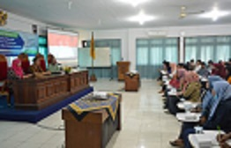

Berita Seputar Universitas Jember

Email > humas@unej.ac.id
Jember, 17 Oktober 2018 Pusat Pengembangan Karir yang dikoordinasikan oleh Lembaga Pengembangan, Pembelajaran dan Penjaminan Mutu (LP3M)
Universitas Jember menyelenggarakan Diskusi Interaktif bertema Kebutuhan Kompetensi dan Skill di Dunia Kerja Pada Perusahaan Berskala Nasional di Indonesia dan menghadirkan narasumber yang merupakan perwakilan dari PT Telkomsel Kanwil Jawa-Bali, PT Indospring Tbk, dan PT Bank Syariah Mandiri, pada Rabu (17/10) di Aula lt. 2 LP3M Universitas Jember.
Kritik dan saran: